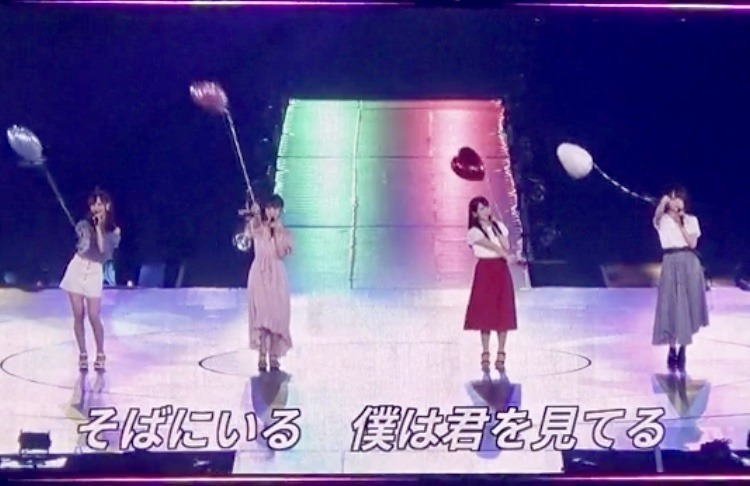

2018/0903Mon不思議だね。

名古屋ドーム2日間のブログを途中まで書いていたので
アップさせていただきます。
来てくださった皆さん
ありがとうございました。
実は、私の体調がライブの3日前から優れず
病院に行き点滴と注射をし何とかステージに立たせていただけることができました
元々扁桃腺が腫れて高熱が出やすかったのもありますが、
本番前に体調を崩してしまった自分が許せず悔しさもあり
苦しくて...
ずっとずっと名古屋ドームに立てる日を楽しみにしていたのでこのまま出られないのは本当に悔しいって思って無理を言い出させていただきました。
もっと身体を強くしなきゃって改めて思いました。
でも、こんなに暑い中
並んで来てくださって
たのしみに待っていてくださってる方がいて
だから私もより
皆さんに会いたい、会いに行かないといけない
っていう強い気持ちが自分の中にずっとあって...
声援やタオルやサイリウムやうちわ
たくさん見えています
100%のパフォーマンスができなくて
ごめんなさい。でも、心の底から
楽しかったです...本当に。
あの景色を見ることができてよかったです
本当に、ありがとうございます
仙台公演は医者とスタッフさんとの話し合いで
出演できませんでしたが会場でメンバーと
ファンの皆さんが私の名前でコールアンドレスポンスをしてくれたと聞いて、嬉しかったです。
またライブできたらいいな...
楽しみにしていてくださった方々
スタッフさん メンバー
ご心配、ご迷惑をおかけして申し訳ありませんでした。
名古屋ドームの初日に実はジコチュープロデュースで"空気感"を披露させていただきました
モニターの写真で少しでも
来られなかった方にお伝えできれば...
サブ地元。名古屋で、
しかもこのほんわかメンバーで披露できて
リハも含め凄く楽しくて
終わったあとにみんなが楽しかったって
言ってくれたのが何よりも嬉しかったです
実はかなり演出にこだわりました

左から楓、私、桃子、れな
まず洋服
頭先から足先まで私が私物を取り入れつつ
メンバーをコーディネートしました
楓はスタイルの良さを生かして
白のショートパンツに
お腹チラ見せで"ヘルシー元気女子"
くすみブルーが
大人っぽくて似合ってました
私はオフショルの淡いピンクワンピースで
メイクもアイシャドウからチークリップまで
ar風ガーリーで"にこにこ系女子"
桃子は上品な感じとちょっと個性的な感じを
出したくて赤を基調にしたお利口スタイルに
しました！本人が着たいって言った服に。
黒髪に赤が華やかでした
"お母さんに紹介したい癒し系女子"
れなはモノトーンのイメージがあるし
現役大学生だから白Tで抜け感を出しつつ
帽子ベルトブーツでいい女感をだして
"何でもできる知的女子"
私服かなっていうくらい着こなしてくれました
みんなの意見も取り入れながら
似合いそうなスタイリングをしてみました〜

あとはこの1人ずつのパーソナルデータ。
私が実際にインタビューをして
スタッフさんに作っていただきました
ありがとうございます
恋愛シュミレーションゲームみたいにしたくて
1人1人違う雰囲気の女の子像で
作らせていただきました

乃木恋リアルも久しぶりで緊張したなぁ。。笑
シチュエーションも
名駅前待ち合わせ(名古屋といえばね！)
付き合って2年(空気感の歌詞より)
と、少し名古屋要素と歌詞の要素を
いれてみました
空気感の歌詞、甘くて好きです

ふわふわとした私のすきな世界観で
本当にジコチューなプロデュースでしたが
幸せでした
ありがとうございました
では。
2018/09/03 14:24
コメント(749)
ナゴヤドームのライブめっちゃ楽しかった！
体調すぐれないのに、頑張って出演してくれてありがとう！！
未央奈を見れてほんと良かった^_^
体調すぐれないのに、頑張って出演してくれてありがとう！！
未央奈を見れてほんと良かった^_^
名古屋ライブのDVD化を希望します。
レコメン楽しみにしてます。
レコメン楽しみにしてます。
こんばんは！
未央奈のファンに対する熱い想い、しっかりと受け止めたよ
今は治療に専念してね
未央奈が早く元気になるのを祈ってるから
ジコチューコーナーは、未央奈のセンスが光る演出だったんだろうねぇ
見れなかったのが残念
またねっ！
未央奈のファンに対する熱い想い、しっかりと受け止めたよ
今は治療に専念してね
未央奈が早く元気になるのを祈ってるから
ジコチューコーナーは、未央奈のセンスが光る演出だったんだろうねぇ
見れなかったのが残念
またねっ！
100％のパフォーマンスができなくてもそれをしようとしただけで立派です。
ライブには行ってないけど…
いつかライブに行きてえなーーー!!
ライブには行ってないけど…
いつかライブに行きてえなーーー!!
更新ありがとう〜！お大事にねゆっくり治してね。
こんばんみーお♪
ブログありがとう！
今年のツアーは、
バスラの3日間から
ずっと参戦していたんだけど
宮城の初日は仕事で行けなかった。
そんで、参戦した最終日は
みお不在のセンチメンタルライブだったよ〜
大きな玉ねぎの下で
って、感じやった。
わかるかなぁ〜？
たまの『さよなら人類』も
わからんかったからなぁ〜笑(レコメン)
そう考えると、サザンは凄いなぁ〜
長年、第一線にいるもんなぁ〜
そういえば、
総入れ歯、
フォーエバー、
ワシもオリコン1位を獲ったことがあるって話を
した事あったっけ？
まあ、音楽ではないけどね〜
。。。。
話がすぐ脱線すっる〜
そう、脱線がすっき〜♪(by永野)
まあ、あれだ
何が言いたいのかと言われれば、
みおのいないライブは
大きな穴が開いているんだな
つまりは、アナーキーなんだなぁ〜
ワシのココロがしぼみそうなんだなぁ〜
なんで、しっかりと療養して
完全復活してクレヨンしんちゃん♪
わたし、ま〜つ〜わ♪
いつまでも、ま〜つ〜わ♪
なんか、よくわからんと思うので
このへんにしとくわ〜
兎に角、しっかり、休める時には
休んでね！
ブログも、モバメも、755も
こういう時には、無理せんといて！
では、再会の日を楽しみにしているよん☆
わたる⊿
ブログありがとう！
今年のツアーは、
バスラの3日間から
ずっと参戦していたんだけど
宮城の初日は仕事で行けなかった。
そんで、参戦した最終日は
みお不在のセンチメンタルライブだったよ〜
大きな玉ねぎの下で
って、感じやった。
わかるかなぁ〜？
たまの『さよなら人類』も
わからんかったからなぁ〜笑(レコメン)
そう考えると、サザンは凄いなぁ〜
長年、第一線にいるもんなぁ〜
そういえば、
総入れ歯、
フォーエバー、
ワシもオリコン1位を獲ったことがあるって話を
した事あったっけ？
まあ、音楽ではないけどね〜
。。。。
話がすぐ脱線すっる〜
そう、脱線がすっき〜♪(by永野)
まあ、あれだ
何が言いたいのかと言われれば、
みおのいないライブは
大きな穴が開いているんだな
つまりは、アナーキーなんだなぁ〜
ワシのココロがしぼみそうなんだなぁ〜
なんで、しっかりと療養して
完全復活してクレヨンしんちゃん♪
わたし、ま〜つ〜わ♪
いつまでも、ま〜つ〜わ♪
なんか、よくわからんと思うので
このへんにしとくわ〜
兎に角、しっかり、休める時には
休んでね！
ブログも、モバメも、755も
こういう時には、無理せんといて！
では、再会の日を楽しみにしているよん☆
わたる⊿
こんばんは、お疲れさま！
再びコメント。
なんか気になり‥
体調大丈夫かい？
ホンマにしんどい時は無理はしたらアカンよ。
頑張ってほしいけど、体力は資本やよ。
みんなも大切、自分自身も大切。
今までも、これから先もね。
ではでは、またね！
台風被害、かなりのだよ。
みんなも気をつけてください。
ほなね、またね！
堀ちゃん。
再びコメント。
なんか気になり‥
体調大丈夫かい？
ホンマにしんどい時は無理はしたらアカンよ。
頑張ってほしいけど、体力は資本やよ。
みんなも大切、自分自身も大切。
今までも、これから先もね。
ではでは、またね！
台風被害、かなりのだよ。
みんなも気をつけてください。
ほなね、またね！
堀ちゃん。
ジコチューコーナー見たかったな〜
なんらかの形で見れること期待してます！！
なんらかの形で見れること期待してます！！
未央奈さんへ
ブログ更新、ありがとう。
宮城公演しか参加できなかった人には申し訳ないけれど、愛知公演に出演してくれて、ありがとう。
私が参加したのは2日目でしたが、未央奈さんの姿をみることが出来て、嬉しかったです。
ジコチュープロデュース『空気感』。
写真付きで解説してくれて、ありがとう。しかもウィンクまで。
4人の設定がしっかり区別されていて、ナゴヤドームのような広い会場で観るには、4人を見分けやすくて、いいと思います。
衣装も風船もすごく効いています。
未央奈さんの「ar風ガーリーで”にこにこ系女子”」のコーディネートは、いつかの握手会でしたものでしょうか。
楓さん、桃子ちゃん、れなちさん、みんなに喜んでもらえてよかったですね。
こういうエピソードって、読んでいて、気持ちがほっこりします。
また、ふわふわした世界観は、未央奈さんによく似合いそう。
これを機に『空気感』の歌詞を読んだら、何だか切なくなりました。
「不思議だね」
それでは、このへんで。
扁桃炎はまだ治りかけだと思うので、充分に気をつけてください。
100％やりきったと、未央奈さん自身が思えるパフォーマンスが出来る日はきっと来ます。
未央奈さんの座右の銘を引用して、言わせてください。
「大丈夫」だよ。
ブログ更新、ありがとう。
宮城公演しか参加できなかった人には申し訳ないけれど、愛知公演に出演してくれて、ありがとう。
私が参加したのは2日目でしたが、未央奈さんの姿をみることが出来て、嬉しかったです。
ジコチュープロデュース『空気感』。
写真付きで解説してくれて、ありがとう。しかもウィンクまで。
4人の設定がしっかり区別されていて、ナゴヤドームのような広い会場で観るには、4人を見分けやすくて、いいと思います。
衣装も風船もすごく効いています。
未央奈さんの「ar風ガーリーで”にこにこ系女子”」のコーディネートは、いつかの握手会でしたものでしょうか。
楓さん、桃子ちゃん、れなちさん、みんなに喜んでもらえてよかったですね。
こういうエピソードって、読んでいて、気持ちがほっこりします。
また、ふわふわした世界観は、未央奈さんによく似合いそう。
これを機に『空気感』の歌詞を読んだら、何だか切なくなりました。
「不思議だね」
それでは、このへんで。
扁桃炎はまだ治りかけだと思うので、充分に気をつけてください。
100％やりきったと、未央奈さん自身が思えるパフォーマンスが出来る日はきっと来ます。
未央奈さんの座右の銘を引用して、言わせてください。
「大丈夫」だよ。
みおちゃーん♪
体調大丈夫ですか？
無理はしないでね。
また元気な姿を見られるのを楽しみにしてるよ！！
体調大丈夫ですか？
無理はしないでね。
また元気な姿を見られるのを楽しみにしてるよ！！
未央奈！！体調は悪くなってない？大丈夫？今関西の方また台風の被害やばいらしいけど、実家の方は大丈夫？心配だね…これ以上被害が広がらないことを祈ってます！今日もお疲れ様！！
体調は大丈夫ですか？仙台は残念だったけど、しっかりとコールしたよ！
また機会があると思うから、是非その時は最高の思い出を作りましょう！！
また機会があると思うから、是非その時は最高の思い出を作りましょう！！
未央奈に早く元気になって欲しかったので全力で未央奈コールしたよ！
10月の幕張の握手会では元気な姿を見れるのを楽しみ待ってるからね！
だけど、絶対に無理はしないでね！
しっかり体調を戻してから帰ってきてね！
未央奈の復帰を楽しみにしてるね！
10月の幕張の握手会では元気な姿を見れるのを楽しみ待ってるからね！
だけど、絶対に無理はしないでね！
しっかり体調を戻してから帰ってきてね！
未央奈の復帰を楽しみにしてるね！
こんばんは。。。
大変なのにブログ更新してくれてありがとう。
未央奈のファンへの想い本当に嬉しく思う。
今は一休みで良いと思うよ。
ジコチュープロデュース未央奈の見れて最高やった！
メンバーのコーデは未央奈のおしゃれ力全開だね！それぞれにテーマがあっておもしろい。
乃木恋リアル、未央奈になった時めっちゃテンション上がった！！
名駅待ち合わせってのが地元民には妙にリアル(笑)
あと、開演前の影ナレ誰か全く分からんかった(笑)
では、お大事に。
大変なのにブログ更新してくれてありがとう。
未央奈のファンへの想い本当に嬉しく思う。
今は一休みで良いと思うよ。
ジコチュープロデュース未央奈の見れて最高やった！
メンバーのコーデは未央奈のおしゃれ力全開だね！それぞれにテーマがあっておもしろい。
乃木恋リアル、未央奈になった時めっちゃテンション上がった！！
名駅待ち合わせってのが地元民には妙にリアル(笑)
あと、開演前の影ナレ誰か全く分からんかった(笑)
では、お大事に。
未央奈ちゃん、ひろっしーです！コメント投稿502回目です！
前回はブログ「報告」にモバメの感想を書きました！
時間→「No.2241 2018年9月 3日 02:20」
ブログ更新ありがとうございます！
改めて扁桃腺が腫れていて高熱も出ている状態での名古屋公演よく頑張りました！お疲れ様！乃木坂やライブ、何よりもファンに対する強い想いが凄く伝わりました！
仙台公演のエピソード、これは嬉しいですね！と同時に、未央奈ちゃんにはこんな優しいメンバーとファンがいて幸せだな～と思いました！これも未央奈ちゃんの人柄のお陰！
周りの人々から愛されていて羨ましいぞぉ～！
名古屋公演の初日は「空気感」をプロデュースされたんですね！楽しかったそうで何より！
演出のこだわり凄く伝わりました！
にこにこ系女子良いですね！よく笑う人好き！桃美味しいね！果汁グミの方が好きだけど(笑)曲も乃木恋リアルも映像化して欲しいな～(願)ジコチュープロデュース出来て良かったね！
あと前回書き忘れたのですが、先日放送された「乃木坂46SHOW」で、すずほりコンビのOPコント観れて凄く嬉しかったし、小顔ローラーしてる未央奈ちゃん凄く可愛かったです！
ジコチューのウインクで忘れちゃいました(笑)
今週は「レコメン！」どうですか？
出て欲しいけど無理しちゃダメだよ！
モバメにもありましたが、意外と早寝早起きは難しいですね！だって今も1時過ぎとるし(笑)
ここまで読んで頂きありがとうございました！
毎日お仕事お疲れ様です！体調にはくれぐれも気を付けて頑張ってくださいね！
おやすみおな～！
前回はブログ「報告」にモバメの感想を書きました！
時間→「No.2241 2018年9月 3日 02:20」
ブログ更新ありがとうございます！
改めて扁桃腺が腫れていて高熱も出ている状態での名古屋公演よく頑張りました！お疲れ様！乃木坂やライブ、何よりもファンに対する強い想いが凄く伝わりました！
仙台公演のエピソード、これは嬉しいですね！と同時に、未央奈ちゃんにはこんな優しいメンバーとファンがいて幸せだな～と思いました！これも未央奈ちゃんの人柄のお陰！
周りの人々から愛されていて羨ましいぞぉ～！
名古屋公演の初日は「空気感」をプロデュースされたんですね！楽しかったそうで何より！
演出のこだわり凄く伝わりました！
にこにこ系女子良いですね！よく笑う人好き！桃美味しいね！果汁グミの方が好きだけど(笑)曲も乃木恋リアルも映像化して欲しいな～(願)ジコチュープロデュース出来て良かったね！
あと前回書き忘れたのですが、先日放送された「乃木坂46SHOW」で、すずほりコンビのOPコント観れて凄く嬉しかったし、小顔ローラーしてる未央奈ちゃん凄く可愛かったです！
ジコチューのウインクで忘れちゃいました(笑)
今週は「レコメン！」どうですか？
出て欲しいけど無理しちゃダメだよ！
モバメにもありましたが、意外と早寝早起きは難しいですね！だって今も1時過ぎとるし(笑)
ここまで読んで頂きありがとうございました！
毎日お仕事お疲れ様です！体調にはくれぐれも気を付けて頑張ってくださいね！
おやすみおな～！
こんばんわー未央奈さん！ 京都在住のみずなです~
大変な時に名古屋公演出て下さってありがとうございますヾ(*ΦωΦ)ﾉ
この前は事情を知らず 愛のこもったジコチュウ叱咤激励してしまいましたね その後 体調いかがですか？
返信遅れましたが ブログ更新 名古屋公演の写真アップとコメント楽しく見させて頂きました！
未央奈さん以外の3人も応援してるので感無量でした


 今日は果物の差し入れで~す
今日は果物の差し入れで~す
未央奈さん！ 早くよくなってね〜
9月5日 京都の神社に未央奈さんの健康祈願に行ってきますね。
では
みずな
大変な時に名古屋公演出て下さってありがとうございますヾ(*ΦωΦ)ﾉ
この前は事情を知らず 愛のこもったジコチュウ叱咤激励してしまいましたね その後 体調いかがですか？
返信遅れましたが ブログ更新 名古屋公演の写真アップとコメント楽しく見させて頂きました！
未央奈さん以外の3人も応援してるので感無量でした
未央奈さん！ 早くよくなってね〜
9月5日 京都の神社に未央奈さんの健康祈願に行ってきますね。
では
みずな
やぁ(・∀・)ノ未央奈ちゃん♡こんばんは！
りょーへー(R.N.イナダウアーびーむ)だよ♪
今日もコメント出来なくてごめんね！明日こそはしっかりコメントしたいんだけど…！がんばる！！！
#毎日コメント
#明日も楽しみおな♡
#おやすみおな(^∇^)
りょーへー(R.N.イナダウアーびーむ)だよ♪
今日もコメント出来なくてごめんね！明日こそはしっかりコメントしたいんだけど…！がんばる！！！
#毎日コメント
#明日も楽しみおな♡
#おやすみおな(^∇^)
堀さん、こんばんは。
ブログ更新してくれたことにも、名古屋で体調悪いのにその時できる限りの100％を出してくれたことにも、仙台は身体を大事にして休んでくれたことにも、全部に対してありがとうございます。
空気感では立派にプロデューサーをやったんですね。堀さんの大きくて輝いてる瞳はウィンクが映えるし、パーソナルデータの写真は激烈にべらぼうにやりすぎなくらいに可愛いです。いつも可愛くてありがとうございます。
前回のブログコメントの数みて思ったんですけど、堀さんが居てくれてるおかげで明日も頑張ろうって思えてる人の人数って、全員が握手コメントファンレター等で声を届けるわけじゃないから、実は正確には分からないんですよね。見えてる何倍何十倍もの人が堀さんを必要としてる事実を堀さんが実感できてたらいいなって思います。
自分が体調悪い時でさえ、ひとを元気付けようとしてくれる堀さんを心から尊敬します。
今は全快するのが大事なので、焦らずゆっくり過ごしてくださいね。
ブログ更新してくれたことにも、名古屋で体調悪いのにその時できる限りの100％を出してくれたことにも、仙台は身体を大事にして休んでくれたことにも、全部に対してありがとうございます。
空気感では立派にプロデューサーをやったんですね。堀さんの大きくて輝いてる瞳はウィンクが映えるし、パーソナルデータの写真は激烈にべらぼうにやりすぎなくらいに可愛いです。いつも可愛くてありがとうございます。
前回のブログコメントの数みて思ったんですけど、堀さんが居てくれてるおかげで明日も頑張ろうって思えてる人の人数って、全員が握手コメントファンレター等で声を届けるわけじゃないから、実は正確には分からないんですよね。見えてる何倍何十倍もの人が堀さんを必要としてる事実を堀さんが実感できてたらいいなって思います。
自分が体調悪い時でさえ、ひとを元気付けようとしてくれる堀さんを心から尊敬します。
今は全快するのが大事なので、焦らずゆっくり過ごしてくださいね。
みおちゃんこんばんは
わさびくん可愛すぎて一目惚れしました。喋り方も首ふりもチャーミングすぎる！従順、めちゃ良い子だね(^^
わさびくんのプロフィールは？？
今日はお姉さんと夕飯なにを作ったの〜？良かった後で教えてね！
待ってるよっ
わさびくん可愛すぎて一目惚れしました。喋り方も首ふりもチャーミングすぎる！従順、めちゃ良い子だね(^^
わさびくんのプロフィールは？？
今日はお姉さんと夕飯なにを作ったの〜？良かった後で教えてね！
待ってるよっ
未央奈ちゃんブログ更新ありがとう！！
ゆっくり休んで、体調治してね！！
また、元気な未央奈ちゃんを見れるのを楽しみにしてます！！
今後もお仕事頑張ってください‼
ゆっくり休んで、体調治してね！！
また、元気な未央奈ちゃんを見れるのを楽しみにしてます！！
今後もお仕事頑張ってください‼
４６ＳＨＯＷのオープニングコント、最高でした！
絢音さんとの息もぴったりで、さすが仲良しコンビだなと思いました。
どんな時も応援しているので、また元気な笑顔を見せてください！
絢音さんとの息もぴったりで、さすが仲良しコンビだなと思いました。
どんな時も応援しているので、また元気な笑顔を見せてください！
未央奈しか！！
未央奈ちゃんありがとうございます！楽しみにしてます！頑張ります‼頑張って下さい。ありがとうございます！
全ツお疲れ様でした！
仙台公演にでられなかったからといってあんまり自分を責めないでください！
元気になって戻ってきてくれればそれで十分です！
ゆっくり治療し、お大事になさってください！
仙台公演にでられなかったからといってあんまり自分を責めないでください！
元気になって戻ってきてくれればそれで十分です！
ゆっくり治療し、お大事になさってください！
ブログ更新ありがとー
お大事に～
お大事に～
みおな

わは堀ちゃんが具合悪いとへてだので
ばんげも寝れなさほど心配してだ
仕事もなんも手につかなかった
だどもこうして復活すたとわかったら
ばがみてに嬉しい気分になた
これからもめごいおなごを思いっきりアピールして
頑張てほしい
ばんげも寝れなさほど心配してだ
仕事もなんも手につかなかった
だどもこうして復活すたとわかったら
ばがみてに嬉しい気分になた
これからもめごいおなごを思いっきりアピールして
頑張てほしい
どんな夢だったんだろ？叶うといいね。
未央奈ちゃんガンバレ〜〜〜〜〜〜〜〜
未央奈ちゃんガンバレ〜〜〜〜〜〜〜〜
未央奈ちゃんこんばんは‼ありがとうございます！楽しみにしてます‼大丈夫ですか？体調は大丈夫ですか？頑張ります‼楽しみにしてます！
今日レコメン出られるんですね！
声少しよくなったのかな？
あまり無理しないで下さいね。
声少しよくなったのかな？
あまり無理しないで下さいね。
未央奈、お帰り
無理だけはしないでね
レコメンは仕事の関係で聴けないから
あとでラジコで聞くよ
未央奈の夢
叶うといいね
またコメントするよ
無理だけはしないでね
レコメンは仕事の関係で聴けないから
あとでラジコで聞くよ
未央奈の夢
叶うといいね
またコメントするよ
レコメン出るんだぁ❗
楽しみにしてます❗
楽しみにしてます❗
みおなちゃん更新ありがとう╰(*´︶`*)╯♡
名古屋公演お疲れ様でした(*´꒳`*)
体調万全では無い中ご苦労様でした(´・∀・｀)
自分も扁桃腺が腫れやすく風邪ひきやすいタイプです(´･_･`)
4日くらい前から風邪引いてます(´；ω；`)
ジコチュー企画では「空気感」を披露したんだね（╹◡╹）♡
写真ありがと〜(*´∀`)♪
プロデュース力さすがですね！！
衣装から設定など細かなところまで素敵ですね
とても観たかったです(´・∀・｀)
いまは体調落ち着きましたかー？
無理はせずゆっくり回復して行こうね
名古屋公演お疲れ様でした(*´꒳`*)
体調万全では無い中ご苦労様でした(´・∀・｀)
自分も扁桃腺が腫れやすく風邪ひきやすいタイプです(´･_･`)
4日くらい前から風邪引いてます(´；ω；`)
ジコチュー企画では「空気感」を披露したんだね（╹◡╹）♡
写真ありがと〜(*´∀`)♪
プロデュース力さすがですね！！
衣装から設定など細かなところまで素敵ですね
とても観たかったです(´・∀・｀)
いまは体調落ち着きましたかー？
無理はせずゆっくり回復して行こうね
レコメン聞いてるよ。
復帰とても嬉しいです。
まだ本調子じゃないと思うけど声が聞けてホッとしてます。
復帰とても嬉しいです。
まだ本調子じゃないと思うけど声が聞けてホッとしてます。
レコメン復帰おめでとう御座います。元気そうな声が聞けて、まずはホッと一安心しました。しかし、まだ病み上がり。寒暖差の激しいこれからの気候になりそうなので、お体御自愛下さい。
堀ちゃんこんばんは！
いまレコメン!聴いてます、改めておかえりなさい！！！( ´ ▽ ` )
仙台公演に出れず、悔しい想いもあったと思います。
でも、こんなことを言うと嫌われてしまうかもしれませんが、休むという判断をしてくれて安心してしまった自分がいました。
大げさかもしれませんが、休む判断をしてくれたおかげで、またこうやって堀ちゃんの声を聴くことができる、これからも大好きな堀ちゃんの元気な姿を見られる。
そう思うと、悔しさに耐えながらも休むことを受け入れてくれた堀ちゃんに感謝の気持ちでいっぱいです、本当にありがとう( ´ ▽ ` )
さてさて！改めて名古屋公演お疲れ様でした！
1日目に参加できて本当に楽しかったです、ずっと堀ちゃんを探しては見つけ探しては見つけを繰り返してました(o^^o)
堀ちゃんのジコチュープロデュースを見ることができただけでも最高でしたが、こんなに考えに考えてくれていたんだと思うと、感情を言葉にするのが難しいです…！
感想を全部書くと長くなりすぎちゃうので、感謝の気持ちだけでも伝わるといいなぁ( ´ ▽ ` )
そのときは堀ちゃんの体調が悪いなんて全く感じられず、ただただ楽しい時間を過ごさせてもらっちゃいました( ´ 〜 ` )
ファンのことを想ってくれて本当にありがとう、僕にとって堀ちゃんは名古屋公演でも今もこれからも、最高のアイドルです(o^^o)
まだ完全に回復はしてないと思いますので、頑張りすぎちゃう堀ちゃんですが、周りの人に甘えながら、自分にも甘えながら、しばらくはジコチューに過ごしてほしいです( ´ ▽ ` )
またこれからも元気な堀ちゃんを色んなところで見られるのを楽しみにしてます！(o^^o)
まとまらないコメントになってしまいましたが、またコメントさせてください！笑
レコメン!終わったら、おやすみおなー！
いまレコメン!聴いてます、改めておかえりなさい！！！( ´ ▽ ` )
仙台公演に出れず、悔しい想いもあったと思います。
でも、こんなことを言うと嫌われてしまうかもしれませんが、休むという判断をしてくれて安心してしまった自分がいました。
大げさかもしれませんが、休む判断をしてくれたおかげで、またこうやって堀ちゃんの声を聴くことができる、これからも大好きな堀ちゃんの元気な姿を見られる。
そう思うと、悔しさに耐えながらも休むことを受け入れてくれた堀ちゃんに感謝の気持ちでいっぱいです、本当にありがとう( ´ ▽ ` )
さてさて！改めて名古屋公演お疲れ様でした！
1日目に参加できて本当に楽しかったです、ずっと堀ちゃんを探しては見つけ探しては見つけを繰り返してました(o^^o)
堀ちゃんのジコチュープロデュースを見ることができただけでも最高でしたが、こんなに考えに考えてくれていたんだと思うと、感情を言葉にするのが難しいです…！
感想を全部書くと長くなりすぎちゃうので、感謝の気持ちだけでも伝わるといいなぁ( ´ ▽ ` )
そのときは堀ちゃんの体調が悪いなんて全く感じられず、ただただ楽しい時間を過ごさせてもらっちゃいました( ´ 〜 ` )
ファンのことを想ってくれて本当にありがとう、僕にとって堀ちゃんは名古屋公演でも今もこれからも、最高のアイドルです(o^^o)
まだ完全に回復はしてないと思いますので、頑張りすぎちゃう堀ちゃんですが、周りの人に甘えながら、自分にも甘えながら、しばらくはジコチューに過ごしてほしいです( ´ ▽ ` )
またこれからも元気な堀ちゃんを色んなところで見られるのを楽しみにしてます！(o^^o)
まとまらないコメントになってしまいましたが、またコメントさせてください！笑
レコメン!終わったら、おやすみおなー！
｢スイカとピーナッツモナカのレコメン！｣
ピーナッツモナカ大フィーバーでしたね！笑
堀ちゃん病み上がり回でしたが、ハチャメチャなギャグ対決といいピーモナ案件だったりお風呂事情だったりと、盛り沢山この上ないスペシャルウィークな放送が楽しすぎました！
元気になってくれて本当に良かった！
ピーナッツモナカ大フィーバーでしたね！笑
堀ちゃん病み上がり回でしたが、ハチャメチャなギャグ対決といいピーモナ案件だったりお風呂事情だったりと、盛り沢山この上ないスペシャルウィークな放送が楽しすぎました！
元気になってくれて本当に良かった！
未央ちゃんおはようございます
レコメン出てくれてありがとう！久しぶりに声聴けて安心しました。まだ完治ではないかもしれないけど、少しでも元気そうで良かったです。今週も面白かったよ〜！！
ご飯ももりもり食べてるみたいで良かった。みおちゃんの声も沢山食べるところも大好き。おやすみおな
レコメン出てくれてありがとう！久しぶりに声聴けて安心しました。まだ完治ではないかもしれないけど、少しでも元気そうで良かったです。今週も面白かったよ〜！！
ご飯ももりもり食べてるみたいで良かった。みおちゃんの声も沢山食べるところも大好き。おやすみおな
ほりちゃん こんばんは。
レコメン! 寝過ごしてしまい..( ; _ ; )
タイムフリーで聴いたんですが。
すごく楽しかったよ✨
おかえりなさい。( -人- ｡)
また、のりさんとの名コンビが
聴けるの嬉しい。笑
おやすみなさいー！
レコメン! 寝過ごしてしまい..( ; _ ; )
タイムフリーで聴いたんですが。
すごく楽しかったよ✨
おかえりなさい。( -人- ｡)
また、のりさんとの名コンビが
聴けるの嬉しい。笑
おやすみなさいー！
そういえば今日お母さん誕生日だよね？？
おめでとうございます！娘さんのこと大好きです。とよろしくお伝えください！！
おめでとうございます！娘さんのこと大好きです。とよろしくお伝えください！！
レコメン聞いたよ！
元気な声聞いて安心しました。
無理しないでくださいね。
元気な声聞いて安心しました。
無理しないでくださいね。
堀殿のレコメン拝聴いたしましたうぇーい┌(_Д_┌ )┐れ。堀殿のお元気なお声に癒されうれぴーぽー(o￣◎￣)oバブゥ♡四分の一のお水トークけんぴゅー(≧∇(≧∇(≧∇(≧∇≦)∇≦)∇≦)∇≦)ｷｬｰ♡
未央奈ちゃん体調は大丈夫ですか？北海道で、心配ですね‼気を付けて下さい！
堀ちゃん
おかげんいかがですか？
初コメかな？
四年ぐらい前に
自分も扁桃腺が完熟してしまい
えらいことになり
入院して取っちゃいました。
自分の場合はかなり重賞だったので
術後は全力で(ヤッホー)出来るまでに
三カ月は掛かりましたよ。
だから、絶対に無理は禁物です！
扁桃腺を取る取らないは、
結構悩むよね。
なんにしろ、神様が
しっかり休んで体調整えなさい
って言っているのではないかな？
また元気になった堀ちゃんの
パフォーマンスを見してね。
無理は禁物ですよ。
では
おかげんいかがですか？
初コメかな？
四年ぐらい前に
自分も扁桃腺が完熟してしまい
えらいことになり
入院して取っちゃいました。
自分の場合はかなり重賞だったので
術後は全力で(ヤッホー)出来るまでに
三カ月は掛かりましたよ。
だから、絶対に無理は禁物です！
扁桃腺を取る取らないは、
結構悩むよね。
なんにしろ、神様が
しっかり休んで体調整えなさい
って言っているのではないかな？
また元気になった堀ちゃんの
パフォーマンスを見してね。
無理は禁物ですよ。
では
みおなちゃん、こんにちは！
ジコチュープロデュースの空気感、みおなちゃんのこだわりがすごく詰まってたんだね(^-^)/
会場で見たかったな〜
でも福岡公演でシークレットグラフィティー見れてよかった!
ライブとか色んなとこでみおなちゃんの元気な姿見れるの楽しみにしてるね(*´`)
明日からもfight!!
ジコチュープロデュースの空気感、みおなちゃんのこだわりがすごく詰まってたんだね(^-^)/
会場で見たかったな〜
でも福岡公演でシークレットグラフィティー見れてよかった!
ライブとか色んなとこでみおなちゃんの元気な姿見れるの楽しみにしてるね(*´`)
明日からもfight!!
こんにちは
レコメン！とても面白かったです！！
ピーナッツ最中は美味しかったですか！？笑
ネタにされて、とてもオイシかったですね☆
お風呂はちゃんと浸る方が疲れ取れますよ◎
やはり、のりさんとの掛け合いは絶妙です！
そして何より生声が聴けたのが嬉しいです♡
校章デザインが採用されたのは凄い事だし、
猿のわさびくんはとってもユニークですね♪
癒されながらゆっくりと静養して下さいね☺
レコメン！とても面白かったです！！
ピーナッツ最中は美味しかったですか！？笑
ネタにされて、とてもオイシかったですね☆
お風呂はちゃんと浸る方が疲れ取れますよ◎
やはり、のりさんとの掛け合いは絶妙です！
そして何より生声が聴けたのが嬉しいです♡
校章デザインが採用されたのは凄い事だし、
猿のわさびくんはとってもユニークですね♪
癒されながらゆっくりと静養して下さいね☺
レコメン、、 ピーナッツモナカのくだり、面白かったん^^ 最後ののりさんの「お前だよっっ」 ナイスつっこみです。笑 でもみおなが元気で良かったなぁ^-^ やっぱ大好きやっ笑
こんばんは
レコメン聴きました。
のりさんとの話の掛け合いは
相変わらず面白いですね。
久しぶりに聞いた堀ちゃんの笑い声は
やっぱり聞いてる側も楽しい気持ちに
させる明るい感じの笑い声だなぁって
思いました。
引き続き体調管理にはくれぐれも
ご注意下さい。
明日も素敵な一日を
堀ちゃん、おかえり(￣O￣)
それじゃあね(*´ー｀)ﾉ
レコメン聴きました。
のりさんとの話の掛け合いは
相変わらず面白いですね。
久しぶりに聞いた堀ちゃんの笑い声は
やっぱり聞いてる側も楽しい気持ちに
させる明るい感じの笑い声だなぁって
思いました。
引き続き体調管理にはくれぐれも
ご注意下さい。
明日も素敵な一日を
堀ちゃん、おかえり(￣O￣)
それじゃあね(*´ー｀)ﾉ
未央奈おつかれさま(*^^*)
無理だけはしないでね！
いつも応援しているからね
無理だけはしないでね！
いつも応援しているからね


のどのあしつぼ、親指つけね
揉むといいよ。
早く本調子になるといいね！